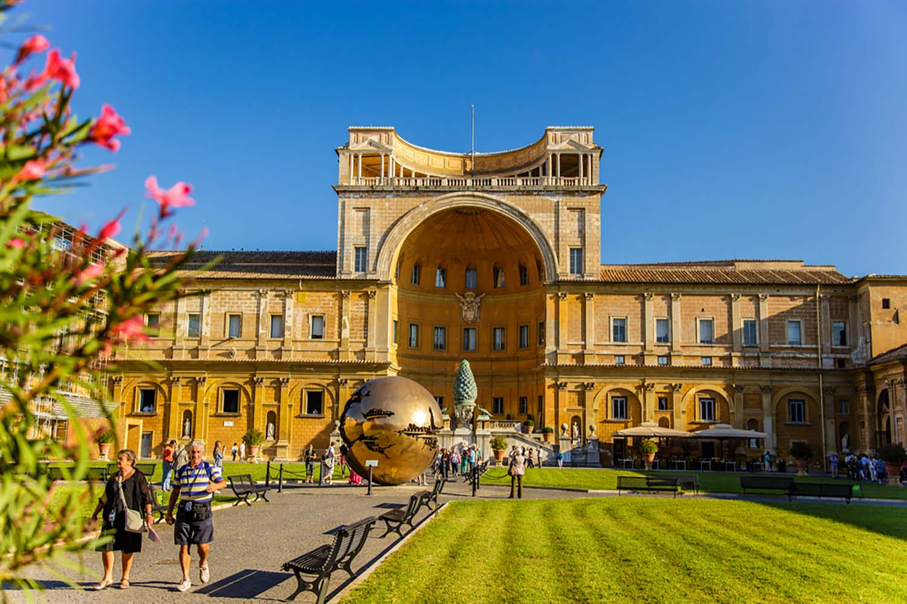
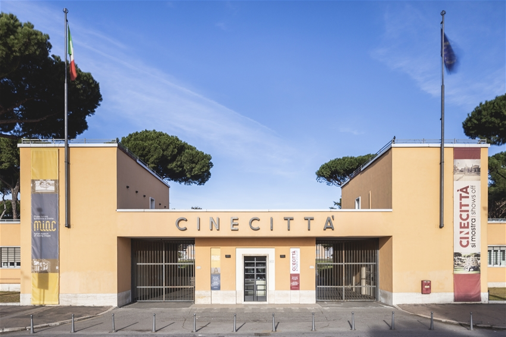
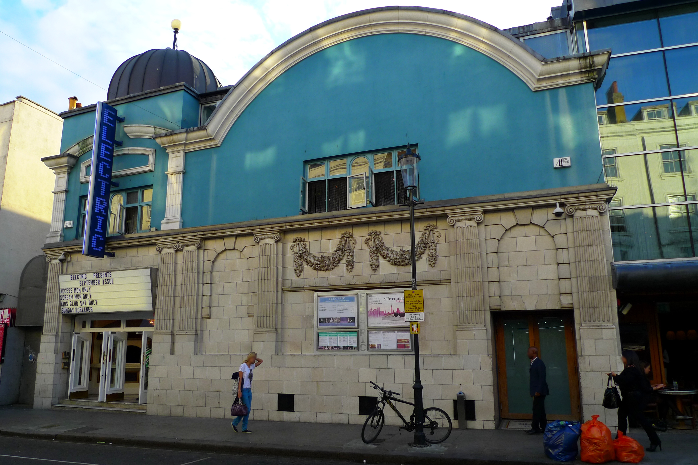
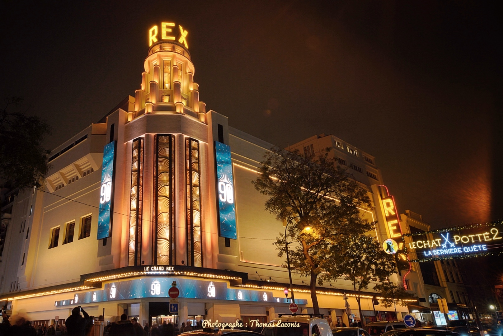
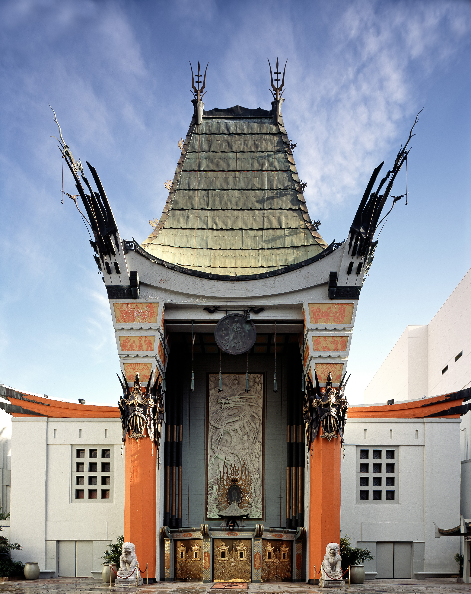
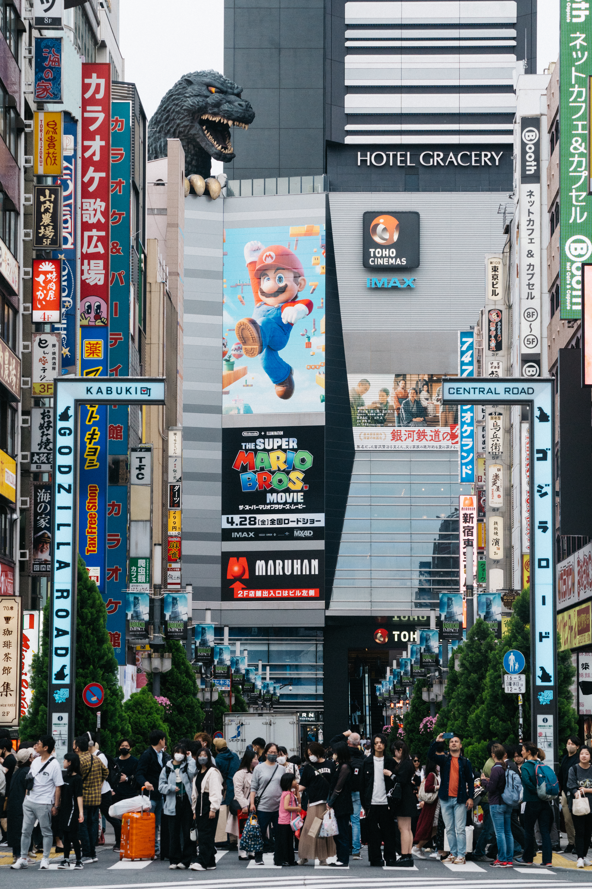

En esta página encontrarás algunos de los museos y cines más importantes del mundo, junto con información sobre su ubicación.
En esta página encontrarás diferentes lugares culturales y de entretenimiento, principalmente museos y cines reconocidos alrededor del mundo.

El Museo del Louvre se encuentra en París, Francia. Es uno de los museos más famosos del mundo y alberga obras como la Mona Lisa.
Ubicación: París, Francia

El British Museum está ubicado en Londres, Inglaterra. Cuenta con una importante colección de objetos y obras provenientes de diferentes culturas y épocas.
Ubicación: Londres, Inglaterra

El Metropolitan Museum of Art, conocido como The Met, se encuentra en Nueva York y posee una de las colecciones de arte más importantes del mundo.
Ubicación: Nueva York, Estados Unidos

El Museo del Prado se encuentra en Madrid, España. Es reconocido por su colección de pinturas europeas y obras de grandes artistas.
Ubicación: Madrid, España

Los Museos Vaticanos están ubicados en la Ciudad del Vaticano y contienen importantes obras de arte y colecciones históricas.
Ubicación: Ciudad del Vaticano

Cinecittà es un importante complejo de estudios cinematográficos ubicado en Roma, Italia, conocido por sus producciones de cine.
Ubicación: Roma, Italia

Electric Cinema es uno de los cines más antiguos de Londres y es conocido por su ambiente clásico y su historia cinematográfica.
Ubicación: Londres, Inglaterra

El Grand Rex es uno de los cines más conocidos de París y destaca por su gran sala y su arquitectura.
Ubicación: París, Francia

Grauman's Chinese Theatre, actualmente conocido como TCL Chinese Theatre, es un famoso cine ubicado en Hollywood.
Ubicación: Los Ángeles, Estados Unidos

Toho Cinemas Kabukicho es un conocido complejo cinematográfico ubicado en Tokio, Japón.
Ubicación: Tokio, Japón
Gracias por visitar nuestra selección de lugares turísticos y culturales.
```